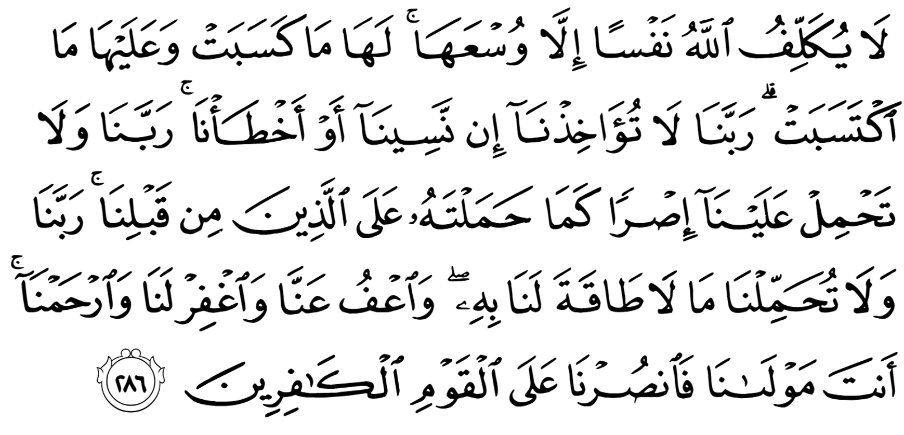
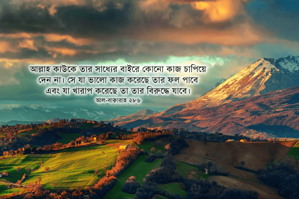

সুরাহ আল-বাক্বারাহ‘র শেষ আয়াতটি অন্যতম সুন্দর একটি আয়াত। এখানে জীবন বদলে দেওয়ার মতো অসাধারণ কিছু বাণী রয়েছে। এই আয়াতটি নিয়ে আমরা যদি গভীরভাবে চিন্তা করি, জীবন সম্পর্কে আমাদের দৃষ্টিভঙ্গি বদলে যেতে বাধ্য। একইসাথে এই আয়াতে একটি সুন্দর দু‘আ রয়েছে, যা কঠিন অন্তরকে নরম করে দেবে।

আল্লাহ কাউকে তার সাধ্যের বাইরে কোনো কাজ চাপিয়ে দেন না। সে যা ভালো কাজ করেছে তার ফল পাবে এবং যা খারাপ করেছে তা তার বিরুদ্ধে যাবে। সুতরাং তাঁর কাছে এই বলে দু‘আ করো, “আমরা ভুলে গেলে বা ভুল করলে সে জন্য আমাদের ধরবেন না প্রভু। আমাদের আগেকার লোকদের উপর যেমন ভারী বোঝা দিয়েছিলেন, আমাদের উপর তেমন ভারী বোঝা দিয়েন না প্রভু। যে বোঝার ভার বইবার সামর্থ্য আমাদের নেই , সে-ই বোঝা চাপিয়ে দিয়েন না প্রভু। আমাদের অপরাধগুলো মাফ করে দিন। আমাদের পাপগুলো গোপন করে দিন। আমাদের দয়া করুন প্রভু। আপনিই তো আমাদের রক্ষাকর্তা। তাই অবিশ্বাসী লোকগুলোর বিরুদ্ধে আমাদের সাহায্য করুন।” [আল-বাক্বারাহ ২৮৬]

আল্লাহ কাউকে তার সাধ্যের বাইরে কোনো কাজ চাপিয়ে দেন না
আল্লাহ تعالى আমাদের প্রত্যেককে ভিন্ন ভিন্ন সামর্থ্য দিয়ে পাঠিয়েছেন। আমরা জীবনে যা কিছু পেয়েছি, বাবা-মা‘র যোগ্যতা, পরিবেশ, আত্মীয়স্বজন, নিজের শারীরিক ক্ষমতা, মেধা, সহ্য ক্ষমতা —এই সব কিছু নির্ধারণ করে আমাদের সাধ্য কতখানি। আল্লাহই تعالى আমাদেরকে আমাদের সাধ্য কতখানি হবে তা নির্ধারণ করে দিয়েছেন। কাউকে তিনি تعالى বেশি দিয়েছেন, কাউকে কম। তিনি تعالى খুব ভালো করে জানেন কার সাধ্য কতখানি। কখনই তিনি تعالى কাউকে সাধ্যের বাইরে কোনো কাজ চাপিয়ে দেন না।
তাহলে মানুষ যন্ত্রণা সহ্য করতে না পেরে আত্মহত্যা করে কেন? কিছু মুসলিম ভীষণ কষ্টে পরে ধর্ম ছেড়ে দেয় কেন?
কিছু মানুষ আছে যারা বহু বছর কারাগারে অমানুষিক নির্যাতন সহ্য করেও নিয়মিত পাঁচ ওয়াক্ত নামাজ পড়েন, কোনোদিন তাদেরকে আল্লাহর تعالى বিরুদ্ধে কিছু বলতে দেখা যায় না। আবার কিছু মানুষ আছেন, যারা নামাজীদের দেখে অবাক হয়ে বলেন, “আপনি পাঁচচচ ওয়াক্ত নামাজ পড়েন! প্রতিইইইদিন! মাসে ত্রিশশশ দিন! আমাকে দিয়ে কোনোদিন তা হবে না। আপনারা এই কাজ কীভাবে পারেন আমি বুঝি না।” অথচ খোঁজ নিলে দেখা যাবে, দ্বিতীয় জনকে আল্লাহ تعالى অনেক সামর্থ্য দিয়েছেন। তাকে কোনোদিন খাওয়া-পড়া নিয়ে চিন্তা করতে হয়নি। গাড়ি চড়ে স্কুলে, কলেজে গেছে। বাবার হোটেলে আরামে বড় হয়েছে। তার সাধ্যের মোটেও কমতি ছিল না। পাঁচ ওয়াক্ত নামাজ পড়ার সাধ্য নেই এমন মানুষ পৃথিবীতে খুঁজে পাওয়া যাবে না। আসলে, সাধ্যের অভাব নেই, অভাব হচ্ছে আল্লাহর تعالى প্রতি বিশ্বাসের এবং আস্থার। একদিন আল্লাহর تعالى সামনে দাঁড়িয়ে যে জবাব দিতে, এটা বহুবার শুনেছে, পড়েছে, কিন্তু মাথায় ঢোকেনি।
একইভাবে কিছু মুসলিমাহ আছেন যারা প্রেমিকের কাছে প্রতারিত হয়ে বা স্বামীর কাছে অপমানিত হয়ে ‘যন্ত্রণা সইতে না পেরে’ বিষ খান। আর কিছু মুসলিমাহ আছেন যারা দিনের পর দিন অমানুষিক নির্যাতিত হয়েও হিজাব ছাড়ার কথা চিন্তাও করতে পারেন না। এদের দুজনকেই আল্লাহ تعالى যথেষ্ট সাধ্য দিয়েছেন। কিন্তু একজন আল্লাহর تعالى উপর আস্থা হারিয়ে ফেলেছেন বা কোনোদিন হয়ত ছিলই না, আর আরেকজন কখনও আস্থা হারিয়ে ফেলেননি।
আল্লাহ تعالى খুব ভালো করে জানেন আমাদের কার সাধ্য কতখানি। তিনি تعالى নিশ্চয়তা দিয়েছেন যে, কখনই তিনি تعالى আমাদেরকে সাধ্যের অতিরিক্ত বোঝা দেবেন না। তাই যদি কারও মনে হয় যে, জীবনে আর কষ্ট সহ্য করতে পারছেন না, এভাবে তিনি আর বেঁচে থাকতে পারবেন না, তাহলে তিনি নিজেকে বোঝান যে, আল্লাহ تعالى তাকে সাধ্যের অতিরিক্ত বোঝা কখনই দেননি। আসল সমস্যা তার ভেতরে। হয় সে তার সমস্যাকে যতটা বড় করে দেখার কথা, তার থেকে বেশি বড় করে দেখছে, অথবা সে ভুল পথে সমস্যা সমাধানের চেষ্টা করছে দেখে তার সমস্যা আরও প্রকট হয়ে যাচ্ছে। অথবা সে হয়ত ইসলামে সম্মতি নেই এমন পথে চলার চেষ্টা করছে দেখেই তার জীবনটা দুর্বিষহ হয়ে গেছে। অথবা হতে পারে যে, তাকে জীবনে কঠিন একটি সমস্যা দেওয়া হয়েছে যেন সে নিজেকে পরিবর্তন করে। যতদিন সে নিজেকে পরিবর্তন না করছে, ততদিন তার সমস্যা চলতেই থাকবে। সে মনের ভেতরে ঠিকই জানে তার ভেতরে কী পরিবর্তন আনা দরকার। কিন্তু সে নিজেকে জোর করে ভুলিয়ে রাখার চেষ্টা করে যাচ্ছে।
আজকাল ডিপ্রেশন এক মহামারি আকারে ছড়িয়ে পরেছে। প্রায় প্রতিটি পরিবারেই কেউ না কেউ এতে আক্রান্ত। যাদের ডিপ্রেশন শুরু হয় কোনো একটি অপ্রীতিকর ঘটনার মধ্য দিয়ে, তারা তাদের ডিপ্রেশন আর কাটিয়ে উঠতে পারেন না, কারণ তারা আল্লাহর تعالى সিদ্ধান্তকে মেনে নিতে পারেন না। যেদিন তারা আল্লাহর تعالى সিদ্ধান্ত মেনে নিয়ে, তাঁর উপর আস্থা রেখে জীবন পার করার সংকল্প করেন, সেদিন থেকে তারা ডিপ্রেশন পরাজিত করার শক্তি খুঁজে পান।
অনেকে বলেন, “ইসলাম বড়ই কঠিন ধর্ম ভাই। এটা করা যাবে না। ওটা দেখা যাবে না। এটা খাওয়া যাবে না। ওটা বলা যাবে না। এত শত শত নিয়ম মেনে জীবন পার করা যায় না।” — এই ধরনের কথা দুই ধরনের মানুষকে বলতে শোনা যায়। এক ধরনের মানুষ যাদের চরিত্র দুর্বল। এরা অল্পতেই ফসকে যায়। এরা সহজে কোনো প্রলোভন থেকে নিজেদের নিয়ন্ত্রণ করতে পারে না, যেমন সিগারেট টানা, সফট ড্রিঙ্কস পান করা, আজেবাজে মুভি দেখা ইত্যাদি। এরা অনেকেই ফাঁকিবাজ টাইপের হয়। এরা যে শুধু ধর্মের ব্যাপারেই এরকম করে তা নয়, জীবনের অনেক কাজেই এরা ফাঁকিবাজ, ঢিলে। সময়মত কাজকর্ম করতে এদেরকে কমই দেখা যায়। এছাড়া এদের ভিতরে বিনোদনের প্রতি আসক্তি দেখা যায়। ধর্ম যেহেতু তাদের খেয়াল খুশি মতো ঢিলেঢালা জীবন যাপনে এবং অঢেল বিনোদনে বুঁদ হয়ে থাকার পথে বাঁধা হয়ে দাঁড়ায়, তাই তারা ধর্মের বিরুদ্ধে নানা ধরনের অজুহাত দাঁড় কড়ায়।
আরেক ধরনের মানুষ হচ্ছে যারা চারিত্রিকভাবে যথেষ্ট শক্ত, তাদের ভেতরে নীতিবোধও প্রবল, কিন্তু তাদের সমস্যা হচ্ছে তারা তাদের মাথার উপরে কোনো কর্তৃত্ব মেনে নেবে না। এরা চায় নিজেদের ইচ্ছেমত জীবন পার করবে। অন্য কারও কথায় এরা উঠবস করবে না। যদিও তারা চাকরি, ব্যবসার ক্ষেত্রে বসের, কাস্টোমারের কথায় ঠিকই উঠবস করে, কিন্তু ধর্মের কথা তারা শুনবে না। এরা নিজেদের ইচ্ছেমত জীবন উপভোগ করবে, নিজেদের কাছে যেটা ভালো মনে হবে সেটা করবে, যেটা খারাপ মনে হবে সেটা করবে না। পিএইচডি ডিগ্রি ছাড়া অন্য কেউ তাদের থেকে কোনো ব্যাপারে ভালো জানে, এটা তারা কখনই মেনে নেবে না। হাজার বছর আগের আরবদের কথা তো বহু দুরের কথা। ধর্মকে নিয়ে চ্যালেঞ্জ করা, উপহাস করা হচ্ছে আসলে নিজেদের ভেতরের এই অহংকারকে ঢেকে রাখার একটি উপলক্ষ মাত্র। এদের ভেতরে ধর্মের প্রতি এক ধরনের গোপন বিতৃষ্ণা আছে। সেই বিতৃষ্ণাকে ঢেকে রাখার জন্য তারা নানা ধরনের আঁতেল অজুহাত দাঁড় কড়ায়।
দুনিয়ার হাজারো প্রলোভনকে উপেক্ষা করে, হাজারো অন্যায় করার সুযোগ পেয়েও তা ছেড়ে দিয়ে যারা ধর্মের আদেশ মেনে সততার সাথে জীবন পার করতে পারেন, তাদের চরিত্র ইস্পাত দৃঢ় হয়ে যায়। এরকম ইস্পাত দৃঢ় চরিত্রে অধিকারীরা কাজে-কর্মে অত্যন্ত নিষ্ঠাবান, আস্থাশীল হন। একজন সত্যিকারের মুসলিম একাউন্টেন্ট কোনোদিন এক টাকাও এদিক-ওদিক করেন না। একজন সত্যিকারের মুসলিম ডাক্তার কোনোদিন অপারেশন করার সময় কত টাকা পাচ্ছেন, তা ভেবে দেখেন না। একজন সত্যিকারের মুসলিম চাকুরীজীবী কোনো একদিন অফিসে আধাঘণ্টা পরে ঢুকলে, তারপর ছুটির পরে আধাঘণ্টা বেশি কাজ করে পুষিয়ে না দিয়ে বের হয়ে যান না। তাদের ন্যায়বোধ তাদেরকে ছোটখাটো অন্যায় সুবিধা নেওয়া থেকেও আটকে দেয়। এটা কোনো সহজ অর্জন নয়। যারা এই অর্জন করতে পারেন, তারাই যথার্থ মুসলিম, তাদের জন্য বিরাট পুরস্কার রয়েছে।
সে যা ভালো কাজ করেছে তার ফল পাবে এবং যা খারাপ করেছে তা তার বিরুদ্ধে যাবে
মানুষ যখন ভালো কাজ করে, তখন সে যে শুধুই আখিরাতে পুরস্কার পায় তা নয়, আল্লাহ تعالى অনেক সময় দুনিয়াতেও তাকে ভালো কিছু দেন। অনেকেই দেখেছেন যে, তারা যখন কোনো মানুষের উপকার করেন, তখন তার জীবন থেকে কোনো একটা সমস্যা দূর হয়ে যায়। হয়ত আগে তিনি ঘন ঘন অসুস্থ হতেন, এখন আর হন না। হয়ত তিনি বহু বছর কোনো এক সমস্যায় ভুগেছেন, কিন্তু কিছুদিন আগে এক অভাবী আত্মীয়ের উপকার করার কারণে, কীভাবে যেন তার দীর্ঘ দিনের সমস্যা দূর হয়ে গেলো। আবার অনেকে দেখেছেন যে, আগে তিনি কাজের চাপে পরিবারকে সময় দিতে পারতেন না, সারাদিন কাজ করার পর বিছানায় ধপ্ করে পড়ে যাওয়া ছাড়া আর কিছু করার শক্তি থাকত না। কিন্তু একদিন তিনি অনেক জোর করে ইসলামের জন্য পড়াশুনা করা শুরু করলেন। হয়ত সপ্তাহে একদিন গিয়ে আরবি শেখা শুরু করলেন। এরপর থেকে দেখা গেল তার কাজের চাপ কমে গেছে। তিনি বাসায় ফিরে আর অর্ধমৃত হয়ে ঢুলতে থাকেন না। বাচ্চাদের সাথে খেলার সময় পান। এভাবে আল্লাহ تعالى মানুষকে তার ভালো কাজের ফল ভোগ করতে দেন। দুনিয়াতে সে ভালো কাজের ফল একটু চেখে দেখে, আর আখিরাতে গিয়ে তো খাওয়া আর খাওয়া!
একইসাথে وَعَلَيْهَا مَا اكْتَسَبَتْ — অর্থাৎ তার কাজের ফল তার বিরুদ্ধে যাবে। মানুষ খারাপ কাজ করলে দুনিয়াতেই তার ফল কিছুটা ভোগ করতে পারে। অনেক সময় দেখা যায়, কেউ বাবা-মার সাথে ঝগড়া করে বাইরে গেলো, তারপর বাড়িতে ফিরল জ্বর, পেট খারাপ নিয়ে। কেউ দেখা গেল কন্ট্রাক্টরদের সাথে চুক্তি করে দুই নম্বর কাঁচামাল দিয়ে প্রজেক্ট করলো বেশি করে মুনাফা হাতিয়ে নেওয়ার জন্য। তারপর তার স্ত্রীর সারাজীবন কঠিন সব অসুখ, ছেলেমেয়ের বখে যাওয়া, এমনকি শেষ বয়সে গিয়ে নাতীদের যন্ত্রণায় ভুগতে ভুগতে জীবন পার করা। কেউ দেখা যায় অন্যায় তদবির করে নিজের সন্তান বা আত্মীয়দের ঢাকায় পোস্টিং দিয়েছে। যার পাওয়ার কথা তাকে তার অধিকার থেকে বঞ্চিত করেছে। তারপর তাদের ঢাকায় থাকাটাই তার জীবনে অভিশাপ হয়ে গেছে। এখন তাদেরকে দূরে পাঠিয়ে দিতে পারলেই সে বাঁচে। দুনিয়াতে অন্যায় করে সারাজীবন সুখে শান্তিতে জীবন পার করে গেছে এরকম উদাহরণ খুঁজে পাওয়া যাবে না। বরং উল্টোটা দেখা যায়। ঘুমের ওষুধ খেয়েও আজকাল আর ঘুম হয় না। কিছুক্ষণ একা থাকলে মাথার ভেতরে হাজারো দুশ্চিন্তায় পাগল হয়ে যায়। বাইরে থেকে তাকে দেখে যতই জৌলুস, আয়েসের জীবন পার করতে দেখা যাক না কেন, তার ব্যক্তিগত জীবনে গভীর অন্ধকার ছাড়া আর কিছু নেই।
“আমরা ভুলে গেলে বা ভুল করলে সে জন্য আমাদের ধরবেন না প্রভু”
“আহ্হা! মাগরিব কখন শেষ হয়ে গেল খেয়ালই করিনি।” — এটা হচ্ছে ভুলে যাওয়া। আর, “কিছুক্ষণ পরেই মুভিটা শেষ হয়ে যাবে। এখন কঠিন ক্লাইম্যাক্স চলছে। মুভিটা শেষ হলেই নামাজ পড়বো” — কিন্তু ততক্ষণে আসর ওয়াক্ত শেষ। এটা হচ্ছে জেনেশুনে ভুল করা। এরকম হাজারো অনিচ্ছাকৃত এবং ইচ্ছাকৃত ভুল আমরা করি। আল্লাহ تعالى যদি আমাদেরকে এগুলোর জন্য ধরেন, তাহলে আমরা শেষ। আমাদের কারও জান্নাতে যাওয়া হবে না। একারণে আমরা আল্লাহর تعالى কাছে আকুতি করি, যেন তিনি تعالى এই সব ভুল, তাঁর অসীম দয়ে থেকে একটু দয়া করে আমাদেরকে ছেড়ে দেন।
“আমাদের আগেকার লোকদের উপর যেমন ভারী বোঝা দিয়েছিলেন, আমাদের উপর তেমন ভারী বোঝা দিয়েন না প্রভু”
কুর‘আনে আমরা আগের জাতিদের কঠিন সময়ের কথা জানতে পারি। বনি ইসরাইলের উপর অনেক কঠিন পরীক্ষা এসেছিল। ফিরাউন তাদের নবজাতক ছেলে সন্তানদের মেরে ফেলত, মেয়েদেরকে রেখে দিত অন্যায় করার জন্য। তারপর বনি ইসরাইল যখন ফিরাউনের কাছ থেকে মুক্তি পেলো, তখন তাদেরকে যুদ্ধে জড়িয়ে পড়তে হলো। ইতিহাস পড়লে আমরা দেখি, আমাদের আগের প্রজন্ম ভয়ংকর সব কষ্ট করে গেছে। দুর্ভিক্ষ, মহামারি, যুদ্ধ, প্রাকৃতিক দুর্যোগে অনেক প্রজন্ম ধ্বসে গেছে, অনেক সময় সম্পূর্ণ হারিয়ে গেছে। অনেক জাতিকে তাদের অন্যায়ের জন্য আল্লাহ تعالى কঠিন শাস্তি দিয়ে নিশ্চিহ্ন করে দিয়েছেন। আমরা এখন আল্লাহর تعالى কাছে আবেদন করি: আমাদের উপর যেন এমন ভয়ংকর পরীক্ষা আল্লাহ تعالى আর না দেন।
আমরা নির্বিচারে পরিবেশ নিধন করছি, বন উজাড় করছি, নদী দূষিত করছি। আমরা আল্লাহর تعالى কাছে আকুতি করি, যেন তিনি আমাদেরকে বন্যা, খরা, দুর্ভিক্ষ দিয়ে শেষ করে না দেন। হাজার হাজার কোটি টাকা আত্মসাৎ করছি, নিরীহ মানুষদের ধরে নিয়ে জেলে ভরছি, তাদের উপর অমানুষিক নির্যাতন করছি। তাদের পরিবারের কান্নায় বাতাস ভারি হয়ে যাচ্ছে। শিশুদের নির্যাতন করে মেরে ফেলা হচ্ছে। শিশুদেরকে পর্যন্ত ধর্ষণ করা হচ্ছে। সমাজের প্রতিটি কোনায় অসহায় নারী, শিশুর কান্না। এরপরেও আল্লাহ تعالى যেন আগের জাতিদের মতো আমাদেরকে আকাশ থেকে পাথর মেরে ঝাঁজরা না ফেলেন, সাত-দিন, সাত-রাত ভয়ংকর বাতাস দিয়ে আমাদের ছিঁড়ে টুকরো করে না ফেলেন, তার জন্য আবেদন করি। আমরা আল্লাহর تعالى কাছে আরেকটু সময় চাই।
অন্যায়ের প্রতিরোধের প্রতি আমাদের আজীবন কাপুরুষতা, উদাসীনতাকে আল্লাহ تعالى যেন ক্ষমা করে দেন। চারপাশের হাজারো নির্যাতিত, নিপীড়িত, অভাবী মানুষের প্রতি কোনো দায়িত্ব পালন না করেও নিজের অসুবিধার জন্য যখন অভিযোগ করি, নিজের আবদার পূরণ হতে দেরি হলে যখন মন খারাপ করি, তখন যেন আল্লাহ تعالى রেগে গিয়ে প্রতিশোধ না নেন, সেজন্য তাঁর কাছে আবেদন করি—
যে বোঝার ভার বইবার সামর্থ্য আমাদের নেই , সে-ই বোঝা চাপিয়ে দিয়েন না প্রভু
আল্লাহ تعالى ইচ্ছা করলেই আমাদের জীবনে এমন একটা ঘটনা ঘটাতে পারেন, যা আমাদের জীবনকে দুর্বিষহ করে দেবে। একটি দুর্ঘটনা, পরিবারের একজন মানুষের অসুস্থতা, পুরো পরিবারকে ধসিয়ে দিতে পারে। যেমন ধরুন, আপনি চার বছর দিন-রাত পড়াশুনা করেছেন একটি ডিগ্রির জন্য। সামনে ফাইনাল পরীক্ষা। এই পরীক্ষার উপর নির্ভর করছে আপনার ফলাফল। এই অবস্থায় আল্লাহ تعالى যদি আপনার বাবা-মা‘র একজনকে হাসপাতালে ভর্তি করিয়ে দেন, আপনি শেষ। আপনার তখন পড়ালেখা বাদ দিয়ে প্রতিদিন হাসপাতালে দৌড়াতে হবে। আপনার গ্রাজুয়েশন, ভালো চাকরির স্বপ্ন সব ভুলে গিয়ে দিনরাত দুশ্চিন্তা করতে হবে: কীভাবে আপনি হাসপাতালের বিল দেবেন?
আবার ধরুন, আপনি বিদেশে পরিবার নিয়ে মহা সুখে জীবন যাপন করছেন। হঠাৎ একদিন দেশ থেকে খবর পেলেন আপনার ভাইকে পুলিশ ধরে নিয়ে গেছে, কারণ তার কাছে ‘সহিহুল বুখারি’ নামে এক ভয়ংকর বই পাওয়া গেছে। আপনার সুখের জীবন শেষ। আপনাকে তখন সব ফেলে দেশে ছুটে যেতে হবে। মামলা সামাল দেওয়া, পুলিশের পেছনে দৌড়ানো — এসব করতে গিয়ে আপনার জীবনের সব সুখ শেষ হয়ে যাবে। ঝামেলা শেষ হতে না হতেই খবর পাবেন, দীর্ঘদিন কাজে অনিয়মিত হওয়ার জন্য বিদেশে আপনার চাকরি চলে গেছে।
অথবা ধরুন আপনি একজন সফল ব্যবসায়ী। আপনার একটি ফ্যাক্টরি রয়েছে। আপনি একদিন কাস্টোমারের কাছ থেকে কোটি টাকার অর্ডার পেলেন। সে জন্য আপনি ঋণ নিয়ে কাঁচামাল কিনে ঝাঁপিয়ে পড়লেন সময় মতো ডেলিভারি দেওয়ার জন্য। এই ডেলিভারি দিতে পারলে আপনার আর ভবিষ্যৎ নিয়ে কোনো চিন্তা করতে হবে না। এত বছরের পরিশ্রম করে দাঁড় করানো ব্যবসার ভবিষ্যৎ নিশ্চিত হয়ে যাবে। কিন্তু একদিন হঠাৎ করে একজন কর্মচারীর হাত থেকে পেট্রোল পরে আগুন ধরে, পুরো ফ্যাক্টরিতে আগুন ছড়িয়ে গিয়ে সব পুড়ে গেলো। আপনি শেষ। আপনার ফ্যাক্টরি বন্ধ, ওদিকে ঘাড়ে বিরাট ঋণের বোঝা।
আজকে আমরা যে ভালো অবস্থায় স্বাভাবিক জীবন যাপন করছি, তিন বেলা খেতে পারি, রাতে বিছানায় ঘুমাতে পারি, সকালে উঠে কাজে যেতে পারি — এগুলো সব যে কোনো মুহূর্তে ভেঙ্গে গুড়িয়ে যেতে পারে। জীবনের সব শান্তি নষ্ট হয়ে যাওয়ার জন্য একটি ছোট দুর্ঘটনাই যথেষ্ট। যেকোনো সময় বাচ্চা রাস্তা পার হওয়ার সময় গাড়ির তলায় চাপা পড়তে পারে। মা বাথরুমে পিছলে পড়ে গিয়ে মাথায় রক্ত জমে প্যারালাইজড হয়ে যেতে পারেন। স্ত্রী রান্না করার সময় গরম তেল ছিটকে পড়ে অন্ধ হয়ে যেতে পারেন। স্বামী অফিস থেকে বাড়ি ফেরার সময় দুর্বৃত্তরা ধরে নিয়ে গিয়ে, টাকা পয়সা কেড়ে নিয়ে, মার দিয়ে রাস্তায় পঙ্গু করে ফেলে রেখে যেতে পারে। এরকম ঘটনা প্রতিদিন বহু দেশে ঘটে। এরকম একটি ঘটনাই যথেষ্ট আপনার উপর কঠিন বোঝা চাপিয়ে দেওয়া জন্য। এধরনের কঠিন বোঝা আল্লাহ تعالى যেন আমাদের উপরে না দেন, তার জন্য প্রতিদিন তাঁর কাছে আমাদের ক্ষমা চাওয়া উচিত। একটা দিনও যদি স্বাভাবিকভাবে পার হয়, তার জন্য তাঁকে অশেষ ধন্যবাদ দেওয়া উচিত। আমাদের জীবনে ঘটে যাওয়া ঘটনাগুলোকে যদি তিনি تعالى দয়া করে আমাদের অনুকূলে নিয়ন্ত্রণ না করতেন, তাহলে আজকে আমরা একটি দিনও স্বাভাবিকভাবে পার করতে পারতাম না।
আমাদের অপরাধগুলো মাফ করে দিন। আমাদের পাপগুলো গোপন করে দিন।
আমরা আল্লাহর تعالى কাছে শুধুই ক্ষমা চাচ্ছি না, তাঁর কাছে পাপগুলো একদম গোপন করে ফেলার জন্য আকুল অনুরোধ জানাচ্ছি। মাগফিরাহ শুধুই ক্ষমা চাওয়া নয়, একইসাথে পাপগুলোকে ঢেকে রাখা, গোপন রাখার আবেদন। আমরা যেসব অন্যায় করি, সেগুলো মাঝে মাঝে এত নোংরা হয় যে, আল্লাহ تعالى যদি সেগুলোকে দুনিয়াতে মানুষের কাছে গোপন করে না রাখেন, তাহলে আমাদের মানসম্মান শেষ হয়ে যাবে। অপমানিত হয়ে মানুষের কাছ থেকে পালিয়ে বেড়াতে হবে। একইভাবে কিয়ামতের দিন এগুলো সব প্রকাশ করে দিলে আমরা লজ্জায়, অপমানে শেষ হয়ে যাবো। একারণে আমরা আল্লাহর تعالى কাছে আমাদের অন্যায়গুলোকে গোপন করে রাখার জন্য মিনতি করি। কিয়ামতের দিন তাঁর تعالى সামনে দাঁড়িয়ে বার বার লজ্জিত না হওয়ার জন্য আকুতি করি।
আপনিই তো আমাদের রক্ষাকর্তা। তাই অবিশ্বাসী লোকগুলোর বিরুদ্ধে আমাদের সাহায্য করুন।
আমরা আল্লাহর تعالى কাছে কাফির লোকজন এবং জাতির কাছ থেকে প্রতিরক্ষা চাইছি। নস্র نصر হচ্ছে কোনো আক্রমণ প্রতিরোধে সাহায্য চাওয়া। মুসলিমদের উপর নানা দিক থেকে আক্রমণ আসে। যেমন, ইসলামের শিক্ষা থেকে একেবারেই দূরে চলে যাওয়া পরিবারের সদস্যদের কাছ থেকে আক্রমণ। এলাকায় কাফির সন্ত্রাসীদের কাছ থেকে আক্রমণ। শান্তিরক্ষা বাহিনীতে থাকা দুর্নীতিবাজ কাফির সদস্যদের কাছ থেকে আক্রমণ। দেশের সরকারের কাফির সদস্যরা আক্রমণ চালায় নিরীহ জনতার উপর। অন্য দেশের কাফির সরকার মুসলিম দেশকে আক্রমণ করে। এরকম যাবতীয় আক্রমণ থেকে আমরা আল্লাহর تعالى কাছে সহযোগিতা চাই। আল্লাহ تعالى যেন আমাদেরকে শারীরিক, মানসিক, অর্থনৈতিক, রাজনৈতিক সব ধরনের সহযোগিতা দেন। কাফিরদের মোকাবেলায় লোকবল, মেধা, প্রযুক্তি, অস্ত্রের ব্যবস্থা করে দেন।
[fblink]
সূত্র
[১] বাইয়িনাহ এর কু’রআনের তাফসীর। [২] ম্যাসেজ অফ দা কু’রআন — মুহাম্মাদ আসাদ। [৩] তাফহিমুল কু’রআন — মাওলানা মাওদুদি। [৪] মা’রিফুল কু’রআন — মুফতি শাফি উসমানী। [৫] মুহাম্মাদ মোহার আলি — A Word for Word Meaning of The Quran [৬] সৈয়দ কুতব — In the Shade of the Quran [৭] তাদাব্বুরে কু’রআন – আমিন আহসান ইসলাহি। [৮] তাফসিরে তাওযীহুল কু’রআন — মুফতি তাক্বি উসমানী। [৯] বায়ান আল কু’রআন — ড: ইসরার আহমেদ। [১০] তাফসীর উল কু’রআন — মাওলানা আব্দুল মাজিদ দারিয়াবাদি [১১] কু’রআন তাফসীর — আব্দুর রাহিম আস-সারানবি [১২] আত-তাবারি-এর তাফসীরের অনুবাদ। [১৩] তাফসির ইবন আব্বাস। [১৪] তাফসির আল কুরতুবি। [১৫] তাফসির আল জালালাইন। [১৬] লুঘাতুল কুরআন — গুলাম আহমেদ পারভেজ। [১৭] তাফসীর আহসানুল বায়ান — ইসলামিক সেন্টার, আল-মাজমাআহ, সউদি আরব [১৮] কু’রআনুল কারীম – বাংলা অনুবাদ ও সংক্ষিপ্ত তাফসীর — বাদশাহ ফাহাদ কু’রআন মুদ্রণ কমপ্লেক্স। [১৯] তাফসির আল-কাবির। [২০] তাফসির আল-কাশ্শাফ।